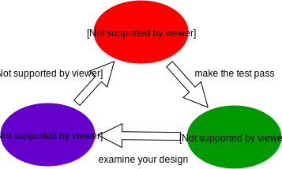

Intro to TDD
Fail fast, fail often
© We Can Code IT, LLC
Meet Uncle Bob!
- Co-author of the Manifesto for Agile Software Development
- Creator of the Three Rules of TDD
- And other stuff…
Three simple (but not easy) rules
Over the years I have come to describe Test Driven Development in terms of three simple rules. They are:
- You are not allowed to write any production code unless it is to make a failing unit test pass.
- You are not allowed to write any more of a unit test than is sufficient to fail; and compilation failures are failures.
- You are not allowed to write any more production code than is sufficient to pass the one failing unit test.
What do these mean? What are their ramifications?
First, we fail

You are not allowed to write any production code unless it is to make a failing unit test pass.
This means that we need to write a failing test.
Also:
You are not allowed to write any more of a unit test than is sufficient to fail; and compilation failures are failures.
What constitutes failure?
- Not compiling (You have red on you!)
- A class, method, … does not exist yet
- A method does not accept the necessary parameters (needs to be changed or overloaded)
- Your tests' assertions fail
Always run your tests to verify they will fail before moving on. Assuming a test will fail is the road to pain.
Go green
You are not allowed to write any more production code than is sufficient to pass the one failing unit test.
If the simplest thing is to return a hard-coded value, then return a hard-coded value. If it is to add a simple conditional, add the conditional. Even if you know it must change later.
Sometimes this feels like you're not doing enough. What you must realize is that you are designing how you will interact with your code.
Also, this cycle keeps us from complicating our code. If we don't need the code to make a test pass, we don't need the code.
Improve the design
Refactoring, as originally defined by Martin Fowler and Kent Beck, is:
A change made to the internal structure of software to make it easier to understand and cheaper to modify without changing its observable behavior… It is a disciplined way to clean up code that minimizes the chances of introducing bugs.
Simply put, it is improving the design of your code without changing what it does.
Improve your design. Your tests were passing before refactoring, so they should be green once you've finished.
What refactoring is not
The term refactoring is often misused. The following are not refactoring activities, since they change what your code is doing:
- fixing bugs
- optimization
- adding error handling
These are all good things to do in the appropriate context. Each should be started with a failing test, just like any other new functionality.
Red, Green, Refactor
